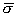
and The total set of
experimental data consists of stresses and strains, gathered in two columns
 . Both columns comprise data belonging to different loading curves C:
. Both columns comprise data belonging to different loading curves C:
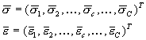
The stress and
strain data of a particular loading curve comprises data of different points t
in (pseudo-)time. T(c) is the number of discrete time points for this curve:
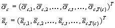
The stress and
strain data of a certain curve and a certain point in time comprise 2
components:
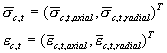
We thus have
defined a column
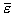 and
and
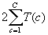
Model
DIANA's
constitutive models for linear elastic behavior, ideal plastic Mohr-Coulomb,
Cam-clay and Modified Mohr-Coulomb with cap-hardening are used to calculate
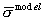
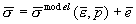
with
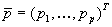 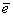 is known as the argument of
interest we write equation above shortly as
is known as the argument of
interest we write equation above shortly as
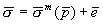
Generalized
Least Squares Fit
Given the
sum of weighted squares
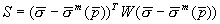 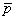 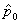 :
:
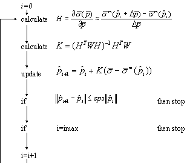
with imax is the maximum number of iterations and eps is the convergence norm.